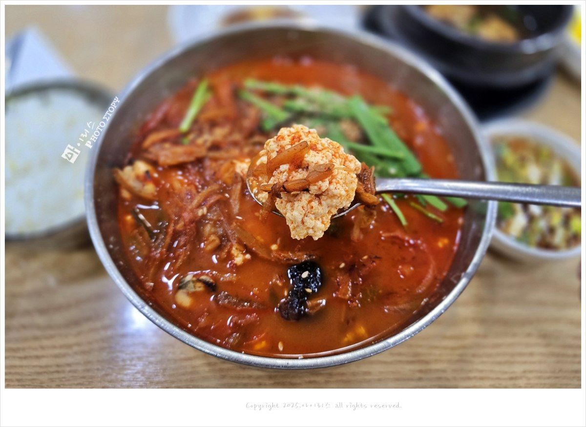
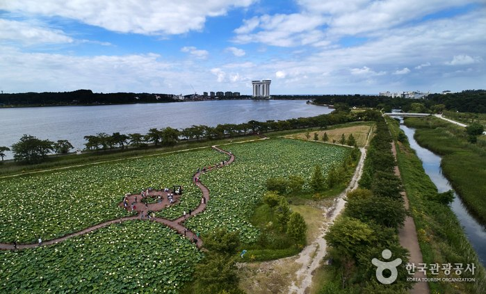
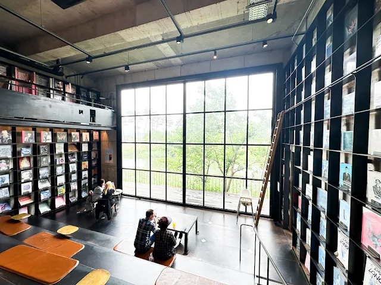
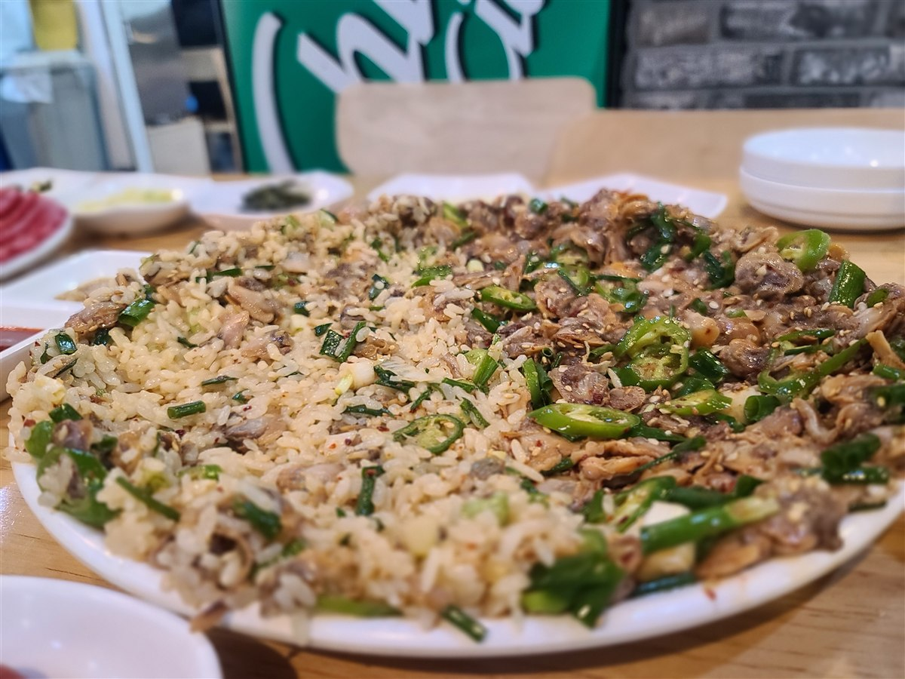
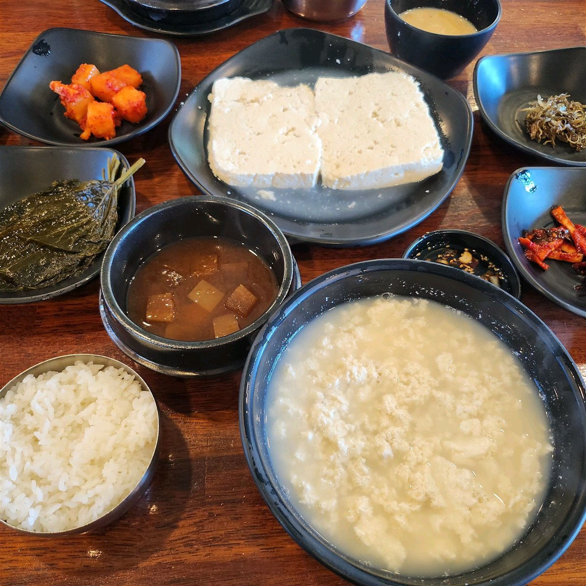
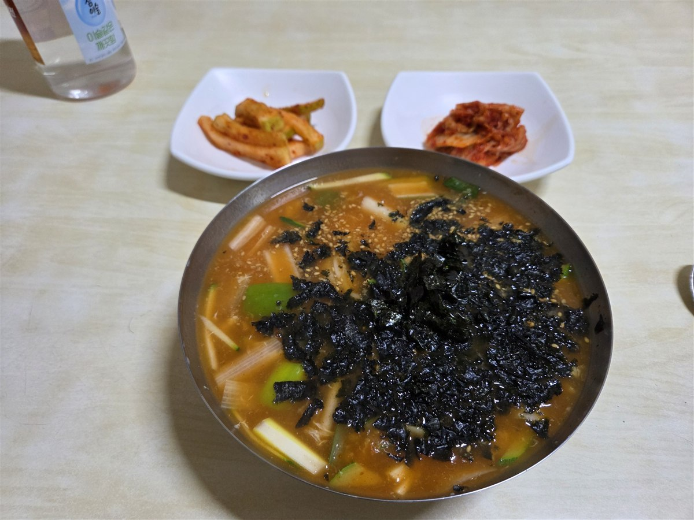
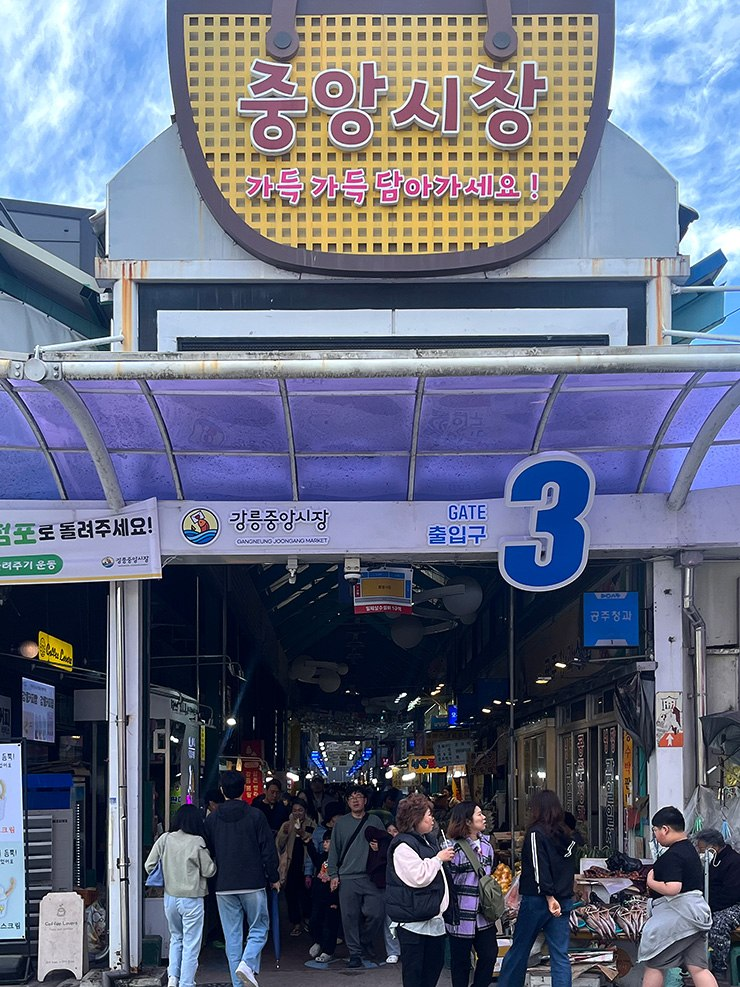
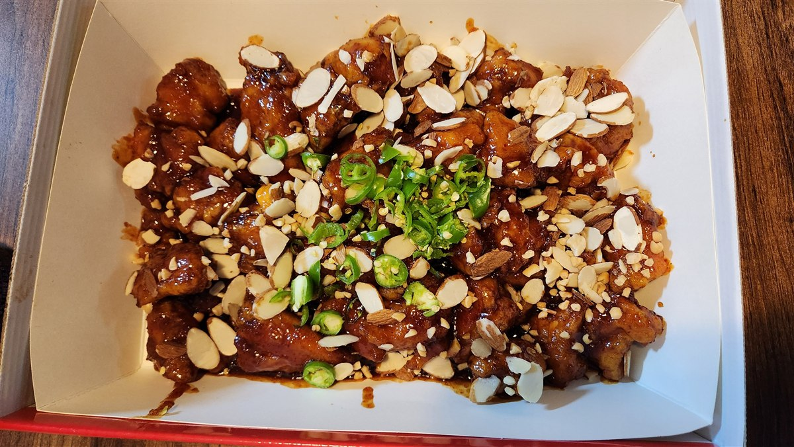
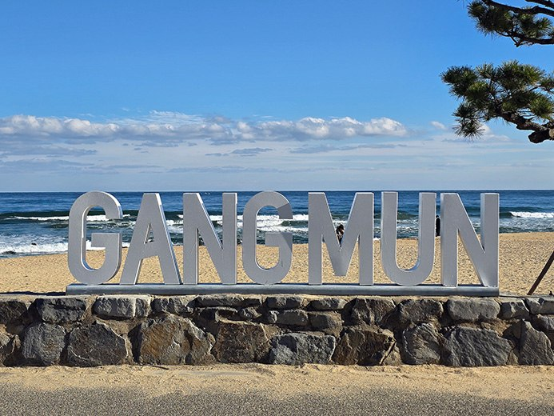

강릉, 바다와 커피 사이
뜨끈한 순두부 한 그릇, 호숫가 산책, 그리고 바다 앞 커피. 서두르지 않고 채우는 둘만의 2박 3일.
초당에서 시작해, 호수 곁으로

점심동화가든 본점
불향 나는 짬뽕 국물에 부드러운 순두부
동화가든 본점
불향 나는 짬뽕 국물에 부드러운 순두부
{kind=link}
첫 끼는 초당동에서 원조짬순으로 시작해요. 매운 국물에 순두부를 곁들이는 메뉴라, 맵기에 민감하면 주문 전 담백한 메뉴를 물어보세요.
- 이곳을 고른 이유
- 2025–2026년 서로 다른 방문 후기 3곳에서 상호와 대표 메뉴를 확인했어요.
- 영업 안내
- 07:00–19:30 후기 기준 · 자료 간 마감 시간 차이 있음
- 방문 팁
- 전용주차장 이용 안내가 있어요. 수요일 휴무·브레이크타임과 당일 대기는 방문 전 재확인. 점심 대기에 60분 여유를 뒀어요.
↓ 차량 약 5–10분 → 경포호 남쪽

산책경포호 남쪽 산책로
한 바퀴 욕심내지 않고, 물가를 따라 40분
경포호 남쪽 산책로
한 바퀴 욕심내지 않고, 물가를 따라 40분
{kind=link}
호수 남쪽에서 출발해 20분쯤 걷고 돌아오는 왕복 산책으로 잡았어요. 호수 전체를 도는 일정은 넣지 않아 다음 카페 시간을 넉넉히 남겨요.
- 이곳을 고른 이유
- 식사와 커피 사이에 긴 차량 이동 없이 걷는 구간이에요.
- 영업 안내
- 야외 산책 · 기상과 현장 통제 확인
- 방문 팁
- 공영주차장의 요금·빈자리와 실제 진입 지점은 당일 지도에서 확인하세요.
↓ 도보 약 10–15분 → 난설헌로 카페 (출발점에 따라 변동)

카페테라로사 경포호수점
핸드드립과 빵을 나눠 먹는 한 시간
테라로사 경포호수점
핸드드립과 빵을 나눠 먹는 한 시간
{kind=link}
난설헌로 145에 있는 경포호수점으로 가요. 핸드드립 한 잔과 베이커리를 나눠 먹고 쉬었다가 체크인하면 첫날이 빡빡하지 않아요.
- 이곳을 고른 이유
- 2025년 방문 후기에서 경포호 인근 위치와 메뉴를 확인했어요.
- 영업 안내
- 09:00–21:00 · 2025.07 후기 기준, 휴무 확인 필요
- 방문 팁
- 매장 주차 가능 안내가 있으나 혼잡할 수 있어요. 본점은 구정면에 있으니 지점을 확인하세요.
↓ 차량 약 15–20분 → 숙소 체크인 후 포남동

저녁엄지네포장마차 본점
꼬막무침비빔밥 한 접시를 둘이서
엄지네포장마차 본점
꼬막무침비빔밥 한 접시를 둘이서
{kind=link}
저녁은 포남동 본점에서 꼬막무침비빔밥을 나눠 먹어요. 큰 접시로 나오는 메뉴라 두 사람이 먹을 양인지 먼저 확인하고 추가 주문해요.
- 이곳을 고른 이유
- 강릉역 인근 식사 동선으로 묶을 수 있는 꼬막 전문점이에요.
- 영업 안내
- 매장 11:00–21:50 안내 · 휴무·마감 재확인
- 방문 팁
- 전용주차장 안내가 있어요. 포장과 매장 식사 마감이 다르므로 대기가 길면 포장을 문의하세요.
↓ 차량 약 15–20분 → 경포·강문 숙소
바다에서 쉬고, 시장에서 먹고

아침초당할머니순두부
담백한 순두부백반으로 천천히 시작
초당할머니순두부
담백한 순두부백반으로 천천히 시작
{kind=link}
전날 짬뽕순두부와는 다른 담백한 백반을 골라요. 순두부백반과 모두부를 무조건 함께 시키기보다는, 아침 배고픔에 맞춰 주문해요.
- 이곳을 고른 이유
- 초당순두부길 77에 있어 경포 숙소에서 다음 해변으로 나가기 편해요.
- 영업 안내
- 08:00–19:00 안내 · 휴게시간 있음
- 방문 팁
- 매장 앞 주차 안내가 있어요. 수요일 휴무 및 화요일 단축영업 여부 확인이 필요해요.
↓ 차량 약 15–20분 → 안목해변
산책안목해변 · 커피거리
모래사장과 커피거리를 오가는 40분
안목해변 · 커피거리
모래사장과 커피거리를 오가는 40분
{kind=link}
해변에 도착하면 먼저 바닷가를 걸어요. 20분 걷고 돌아오는 정도로 잡고, 커피거리에서 자리가 있는 카페를 골라 1시간 쉬어요.
- 이곳을 고른 이유
- 차를 세워두고 산책과 커피를 한곳에서 해결하는 날이에요.
- 영업 안내
- 야외 해변 · 카페별 영업시간 상이
- 방문 팁
- 해변 주차의 요금·가능 구역은 현장에서 확인. 카페는 현장 선택으로, 특정 상호 예약은 포함하지 않았어요.
↓ 도보 5분 안팎 → 해변 카페 (선택 위치에 따라 변동)

점심형제칼국수
맵기를 골라 먹는 강릉 장칼국수
형제칼국수
맵기를 골라 먹는 강릉 장칼국수
{kind=link}
안목에서 시내로 차를 타고 이동해 장칼국수를 먹어요. 맵기 단계가 나뉘어 있으니 처음에는 직원에게 덜 매운 맛을 물어보세요.
- 이곳을 고른 이유
- 바다에서 시내로 들어오는 날 점심으로 배치했어요.
- 영업 안내
- 10:00–19:00 · 화요일 휴무 안내, 재료 소진 가능
- 방문 팁
- 전용주차장 없음으로 안내돼요. 인근 주차 위치를 먼저 정하고 걸어가세요. 대기가 길면 오후 산책을 줄여요.
↓ 차량 약 5–10분 → 중앙시장 공영주차장

산책강릉중앙시장 · 월화거리
시장 구경 후, 월화거리를 느긋하게
강릉중앙시장 · 월화거리
시장 구경 후, 월화거리를 느긋하게
{kind=link}
시장을 먼저 둘러보고 월화거리에서 40분 정도 걸어요. 점심 직후라 간식은 가볍게 나눠 먹고, 저녁 포장까지 사이에 쉬는 시간을 남겨요.
- 이곳을 고른 이유
- 차를 공영주차장에 둔 채 먹거리와 산책을 이어가는 구간이에요.
- 영업 안내
- 거리 상시 / 점포별 상이
- 방문 팁
- 남대천 인근 공영주차장 요금과 시장 연결 동선은 당일 확인. 개별 점포 휴무가 달라요.
↓ 시장 안 도보 이동 → 배니닭강정

저녁배니닭강정
닭강정을 포장해 숙소에서 편하게
배니닭강정
닭강정을 포장해 숙소에서 편하게
{kind=link}
시장 안에서 닭강정을 포장해 숙소에서 저녁으로 나눠 먹어요. 순살과 뼈 있는 메뉴, 반반 구성이 다르니 주문 전에 양과 가격을 확인해요.
- 이곳을 고른 이유
- 둘째 날 저녁은 이동과 대기를 줄이고 숙소에서 쉬는 쪽으로 잡았어요.
- 영업 안내
- 09:00–21:00 안내 · 휴무 확인 필요
- 방문 팁
- 금성로13번길 3-1. 시장 공영주차장 이용. 포장 음식 취식 가능 여부를 숙소에 확인하세요.
↓ 차량 약 20–25분 → 숙소
마지막 아침은, 조금 느리게
아침숙소 조식 · 체크아웃
돌아가는 날은 아침부터 이동하지 않기
숙소 조식 · 체크아웃
돌아가는 날은 아침부터 이동하지 않기
조식을 제공하는 숙소를 고르면 마지막 아침에 식당을 찾아 이동하지 않아도 돼요. 조식 미포함 숙소라면 전날 간단한 아침을 준비해요.
- 이곳을 고른 이유
- 전날까지 다섯 끼를 채웠으니 마지막 날은 여유를 남겨요.
- 영업 안내
- 숙소별 상이
- 방문 팁
- 조식 시간, 포함 여부, 체크아웃 시간을 예약 시 확인하세요.
↓ 차량 약 5–15분 → 강문해변 (숙소 위치에 따라 변동)

산책강문해변
바다를 한 번 더 보고, 수원으로
강문해변
바다를 한 번 더 보고, 수원으로
{kind=link}
체크아웃 후 해변에서 30분 정도 걷고 여행을 마무리해요. 귀가길 점심은 출발 시각과 배고픔에 맞춰 휴게소에서 해결하는 일정이에요.
- 이곳을 고른 이유
- 정동진까지 내려갔다 돌아오는 왕복을 줄여 귀가 시간을 확보했어요.
- 영업 안내
- 야외 산책 · 기상 확인
- 방문 팁
- 주차장 요금·현장 통제 확인. 주말 정체는 예측하기 어려우니 내비게이션 도착 시간을 기준으로 출발하세요.
↓ 11:30 이후 출발 → 수원 약 3–4시간 예상
경포·강문에서 2박
같은 숙소에서 두 밤을 보내면 짐을 옮길 필요가 없어요. 조식 포함 여부와 전용주차 공간을 확인하고 예약하세요. 특정 숙소·요금은 아직 정하지 않았어요.
- 금–일 출발을 가정한 일정이에요. 화·수요일에는 식당 휴무와 겹칠 수 있으니 식사 순서를 조정하세요.
- 일정 시각과 이동 시간은 계획용 추정치예요. 실시간 길찾기 결과가 아니며 대기·교통에 따라 달라져요.
- 가격은 확인한 자료의 참고값이에요. 현재 가격·휴무·주차를 모두 확정하지 못한 장소에는 ‘정보 확인 중’을 표시했어요.
자료를 확인한 기록
2026.09.17 검색 확인 · 동화가든 최근 방문 후기 3곳
장소와 메뉴는 아래 자료를 참고했어요. 영업시간·가격·주차의 현재 상태는 방문 전에 확인하세요. 인기도 순위가 아닌 여행 일정 제안이에요.
동화가든 방문 후기 · 2025.05 ↗동화가든 방문 후기 · 2025.11 ↗동화가든 방문 후기 · 2026.03 ↗사진: 한국관광공사 TourAPI · https://ontrip.kr/travel-guides/details/127722 ↗
개인 감상용 로컬 사이트 · 공개 사용 권한 미확인
{kind=link}
{kind=link}
{kind=link}
{kind=link}
{kind=link}
{kind=link}
{kind=link}
{kind=link}
{kind=link}
{kind=link}
{kind=link}
{kind=link}
{kind=link}
{kind=link}
{kind=link}
{kind=link}
{kind=link}
{kind=link}
{kind=link}
{kind=link}